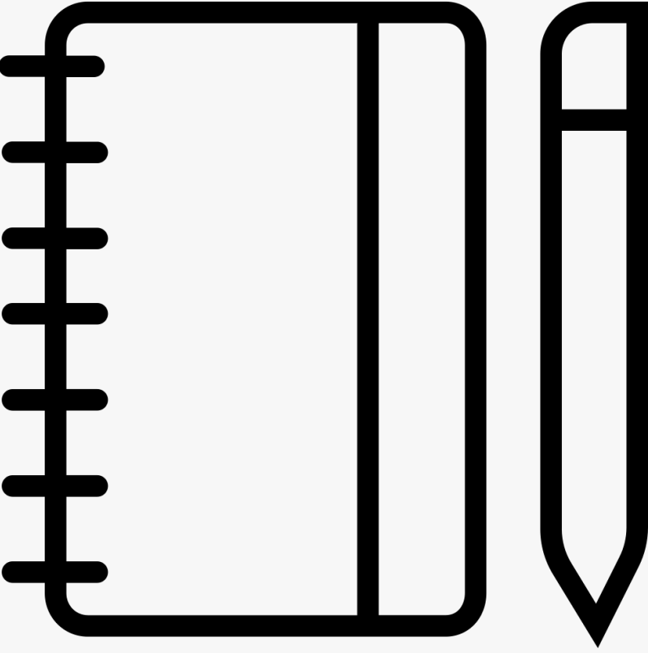
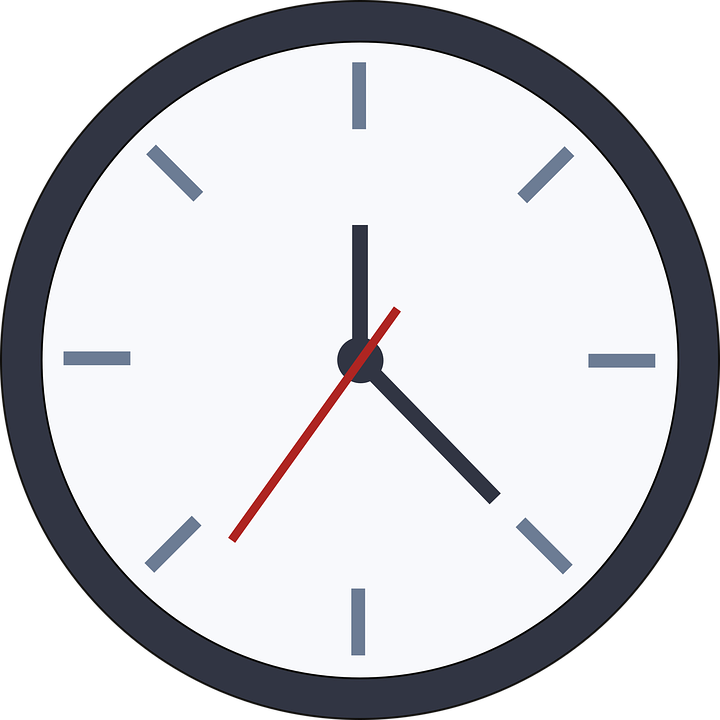
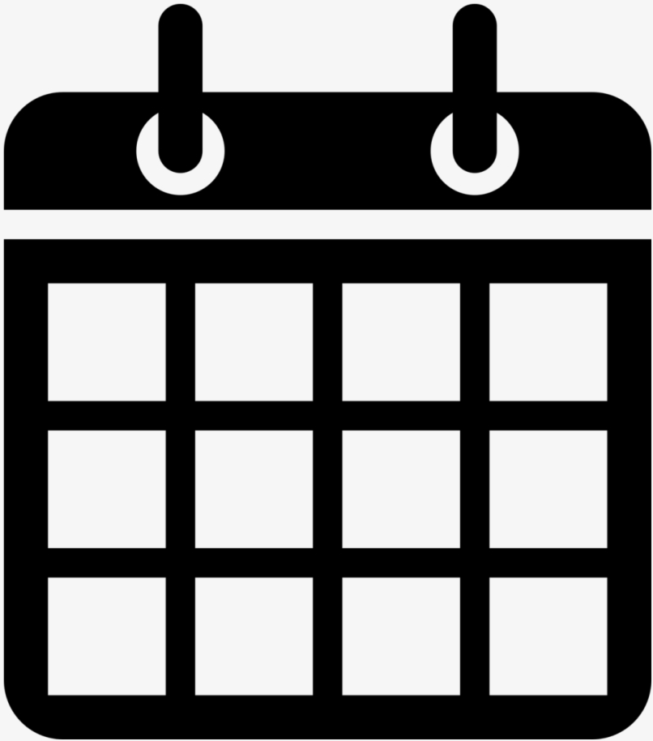

10 Tips for Productivity
1 February 2021

The pace of modern life is so high that many of us set ourselves many goals, the implementation of which takes a very long time. But sometimes we overestimate our strengths and put goals on the back burner. What can we do in order to still have time to do more, which ultimately will lead us to achieve our goals? Here's a list of tips on how to be more productive.
1. Write It Down
Every task, every commitment should be written down. This frees your mind from the energy- and attention-sucking job of trying to remember.Uncompleted commitments take up psychic energy, each one making you just the tiniest bit more tired, more distracted, and therefore less productive. The first step to managing your life and time is getting every commitment, large and small, out of your head and into a trusted system. You can start with a simple pen and paper writing to-do lists or using different apps.
2. Get a Head Start
The best way to hit the ground running is to start the night before. Before leaving your workspace, or before going to bed, take 10 minutes to look over the next day’s commitments. What appointments can’t be missed? What do you need to have with you for those appointments? (Make sure you’ve gathered those materials and have them ready to go.) What three to five tasks must get done? Decide what you’ll do first. Look at that to-do list and decide whether any tasks on it can be delegated to someone else (see number 9 below) or, even better, crossed off the list altogether (see number 10 below). The busier your day, the more important it is to do this quick survey the day or evening before. It means you waste no time in the morning deciding where to start, or gathering materials (and maybe discovering a crucial item isn’t available when you need it).

3. Do Your Most Dreaded Task First
Everyone of us has one or more tasks on our to-do list that we dread doing. Maybe it’s that unpleasant phone call you don’t want to make, or that blog post you’ve been putting off writing because you don’t know how to start, or that project that just overwhelms you because it’s so massive. Whatever it is, it hangs over your head, distracting you with guilt because it keeps getting pushed to the next day and the next. It’s time to end that cycle. Do it first thing. It is about slaying your dragons before breakfast—there’s nothing more motivating for the rest of your day than crossing that monster off your list first thing in the morning. But many people instead of doing the tough tasks first, they do the easy ones. Do something about that overwhelming task—maybe you can’t finish it in one day, but you can at least get started. Then, let the satisfaction of crossing it off your list carry you into the rest of your busy day.
4. Turn off Distractions
One of the major productivity killers is the distraction of constant interruptions: emails, phone calls, people appearing at your door… The technology that can (and should) make our lives easier and better also can make it virtually impossible to maintain the kind of focused attention that’s necessary to work efficiently and effectively. But here’s the thing: you can control that technology. When you’ve got an important task that requires attention and focus, create the space to give it your best. Whether it’s a meeting with a client or colleague, or an important letter that needs to get written, or a piece of art you want to create, schedule a block of time to focus on that commitment, and then turn off all distractions. Shut down your phone (or at least turn off the ringer). Silence your email alerts. Disconnect the internet (or at least Facebook and Twitter). Close your office door. Just for that hour (or thirty minutes, or half day), turn off all outside communications and give yourself the necessary luxury of undisturbed time to really focus on the matter at hand.

5. Take Breaks
There’s a limit to how long anybody can devote deep focus to a task. No matter how busy you are, after a certain amount of time, the law of diminishing returns kicks in, and fatigue—physical and/or mental—starts to impair your effectiveness. Schedule breaks periodically even during the busiest days. Take ten minutes to stand up, stretch, get a drink of water, walk around the block. You’ll return to your work refreshed, both mentally and physically, and ready to be even more productive.
6. Batch Process
If the demands of your day include routine tasks, try to group similar tasks and schedule certain times during the day to knock them out. Answering emails? Returning phone calls? Entering expenses into a spreadsheet? Instead of interrupting your other tasks to do these things piecemeal, batch them. Set two or three or five times a day to check and respond to emails. Return phone calls at 11:45 am and 4:45 pm (or, if you want to avoid getting sucked into long phone conversations, return them at 12:15 pm while folks are at lunch, and 5:15 pm after they’ve left for the day, and just leave a message!). By batching similar tasks, you save the time lost to ramping up multiple times a day and reap the benefits of momentum.
7. Eat a Healthy Breakfast
There is no need to explain this. There are countless studies confirming the importance of breakfast for maintaining our health. Healthy people are more productive. No matter how busy you are, eat a decent breakfast. It’ll fuel you for a terrific start to your day.

8. Get Some Exercise
Not to be too repetitive, but healthy people are more productive. Exercise makes you healthier, so be sure to get some exercise every day. You don’t need to spend hours at the gym to get the benefit of this; take a walk around the block, or do some isometrics at your desk. Just do something to get your heart pumping and your blood racing. It will enhance your general well being as well as your ability to think more clearly.
9. Delegate
As for me, I don't like to ask for help, and often it seems more trouble to explain a task to someone else than to just do it myself. But not everything that needs to be done in your life must be done by you. Evaluate that to-do list carefully. What tasks could someone else do, thereby freeing you up to focus on the things only you can do? Look around you: who is available to do some of those tasks? A colleague? A family member? A paid helper? An important key to productivity is doing only those things that only you can do, and giving somebody else the opportunity to contribute by doing those other tasks.
10. Say No
How many commitments have you made that don’t really need to be kept at all? Have you taken on tasks that don’t actually matter to you or anybody else? Has your day been hijacked by somebody else’s priorities? If your calendar is jammed, if your to-do list is miles long, take ten minutes or so to look at each item with a careful eye. Can any of those appointments or tasks simply be crossed off to create some reasonable margin in your life? When someone calls or appears at your door with a request for your participation in some activity, take a breath and consider whether it fits into your own priorities. If the answer is no, then just say no. Practice it ahead of time: “Thank you for inviting me, but no.” “Thank you for asking, but no.” “Thank you for thinking of me, but no.” As a wise person has said, “no” is a complete sentence. No explanation is necessary. Just no.